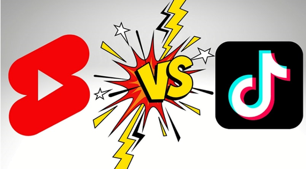

YOUTUBE SHORTS VS TIKTOK
INTRODUCTION
Upon seeing the success of TikTok around the globe, YouTube also released its Shorts platform for young creators. With decreasing attention span, audiences prefer to watch short-format content. Both these platforms serve this purpose by allowing creators to upload their content in engaging ways. Throughout this TikTok vs. YouTube Shorts comparison, we will differentiate them on the basis of several factors.
Similarities Between TikTok and YouTube Shorts Platforms
Before comparing YT Shorts vs. TikTok, we need to see what they have in common. All of the points mentioned below will help you get a clear picture of their similarities.
1. Short Format Video Focus
Both these platforms majorly focus on short video formats. The goal of the creators is to deliver their message in the shortest time. On Shorts, creators can only upload videos up to sixty seconds to engage with the audience. Similarly, TikTok audiences also prefer to get quick entertainment. According to Statista, the most popular videos on TikTok are around fifty seconds.
2. User Analytics
Content creators can analyze the user interactions with their content. Both these platforms show KPIs like views, comments, and impressions to the creators. When comparing TikTok vs. Shorts, the ability to analyze performance is a common factor.
3. Immersive Viewing Experience
Most video platforms offer horizontal viewing screens. However, both platforms ditch conventional screening settings. Viewers are able to watch content in full screen with a vertical mode. Doing so helps these content delivery channels provide an immersive experience to viewers.
4. Music Upload
While comparing YouTube Shorts vs. TikTok, we observe both allow creators to add music to their videos. For this purpose, you can upload music to your videos from a dedicated music library.
5. Similar Editing Tools
Video makers can enhance their short films with various editing tools. Both these platforms allow you to add overlay text and captions. Plus, creators will be able to adjust the speed of their videos. Users can also benefit from their timer for hands-free recording.
Major Differences Between YouTube Shorts and TikTok
After discussing their similarities, let’s compare the differences between YT Shorts vs. TikTok in detail. For this, we will go through the major differences between both short-content delivery platforms.
Video Length
The first difference is the duration of videos on both platforms. Shorts only allow you to upload videos up to sixty seconds. This is because YouTube already has a separate platform for long-form videos. On the other hand, TikTok lets creators upload videos ranging from sixty seconds to